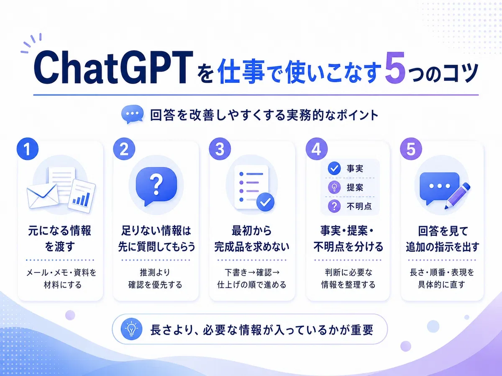
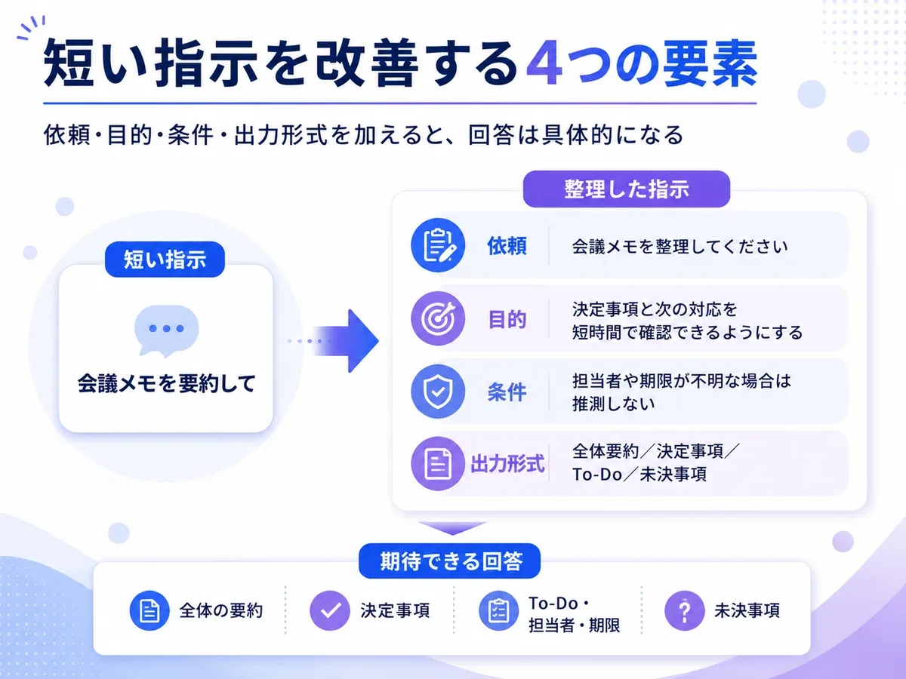
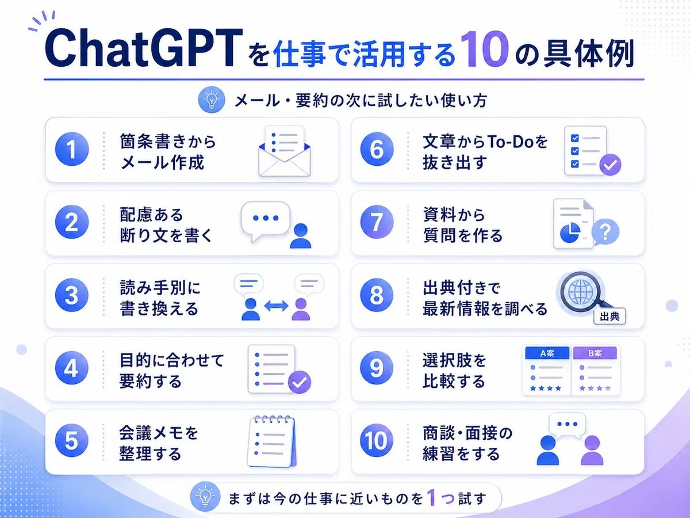
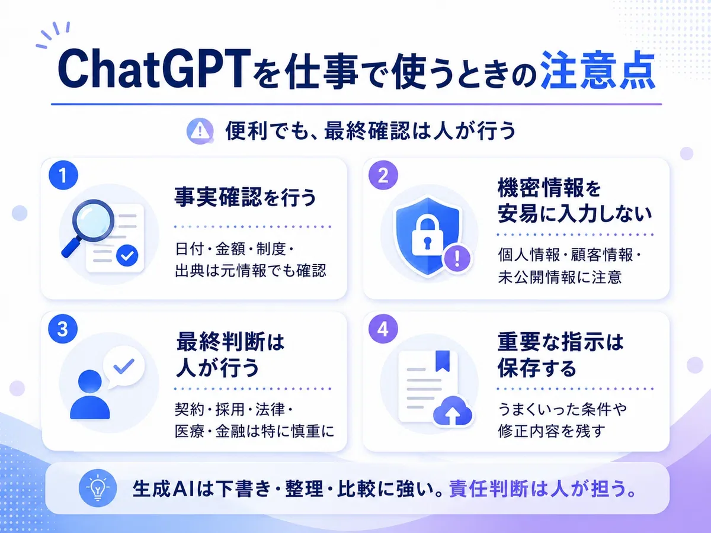

ChatGPTに頼むのは、メール作成と要約だけ。そんな使い方で止まっていませんか？
ここでは、仕事で使える10の活用例を見ながら、回答を具体的にするための「少し足すだけで効く条件」を整理します。
また、一度の指示で完成させようとせず、元になる資料を渡し、不足している情報を確認しながら回答を改善すると、生成AIを実際の業務に活用しやすくなります。
この記事では、ChatGPTへの指示に少し情報を加えることで回答がどのように変わるのかを具体例とともに紹介します。後半では、メール作成や要約以外にも使える仕事向けの活用例を10個掲載しています。
ChatGPTへ入力する依頼文を、分かりやすさのため「指示」または「プロンプト」と呼びます。
この記事でできるようになること
- ChatGPTへの指示は、長さより必要な情報が入っているかが重要
- 元になるメール、資料、メモを渡すと回答を具体化しやすい
- 情報が足りない場合は、先に質問してもらう
- 最初の回答を下書きとして、対話しながら改善する
- 事実確認や最終判断は人が行う
メールと要約以外にも、こんな仕事を頼める
ChatGPTは、分からないことを質問するためだけのものではありません。仕事では、たとえば次のような作業を依頼できます。
- 箇条書きからメールを作る
- 相手に配慮した断りの文章を作る
- 長い資料を短くまとめる
- 会議メモからTo-Doを抜き出す
- 複数の選択肢を比較する
- 計画の弱点を指摘してもらう
- 商談や面接の相手役になってもらう
同じ文章を扱う場合でも、何を目的にするかによって指示は変わります。会議メモを渡す場合でも、「短く要約する」「決定事項だけを確認する」「担当者と期限を整理する」「参加者へのフォローアップメールを作る」では、必要な回答が異なります。
難しい言葉は必要ありません。何をしてほしいのか、何のために行うのか、どの条件を守ってほしいのかを伝えれば、回答は具体的になります。
回答を仕事で使える形にする5つのコツ
プロンプトの型を覚えることも役立ちます。ただし、実際の業務では次の5つを意識した方が回答を改善しやすくなります。

1．ゼロから考えさせず、元になる情報を渡す
ChatGPTは、何もない状態から完成品を作らせるだけでなく、既存の情報を整理したり改善したりする仕事にも使えます。メールを作る場合は、テーマだけでなく、相手から届いたメール、こちらが伝えたい要点、過去のやり取り、日程や金額などの確定事項、使ってはいけない表現も渡します。
会議メモ、箇条書き、既存の資料など、多少整理されていない情報でも構いません。
以下のメモだけを材料にして、顧客向けのメールを作成してください。
メモに書かれていない事実は追加しないでください。回答の材料にしてよい情報の範囲を指定すると、ChatGPTが推測で内容を補うことを減らせます。
2．情報が足りなければ、先に質問してもらう
自分では必要な情報をすべて書いたつもりでも、回答を作るには条件が不足していることがあります。そのような場合は、ChatGPTに不足している情報を確認してもらいます。
回答を作るために必要な情報が不足している場合は、推測して回答せず、先に最大3つまで質問してください。何を伝えればよいか自分でも分からない場合に、特に役立ちます。質問を一度に多く出してほしくない場合は、次のようにも頼めます。
この作業に必要な情報を、一度に一つずつ質問してください。3．最初から完成品を求めない
ChatGPTの最初の回答は、完成品ではなく、確認や修正のための下書きとして利用できます。複雑な作業ほど、整理、確認、作成の順に分けた方が意図を反映しやすくなります。
まず、メールに含める内容を箇条書きで整理してください。
まだメール本文は作成しないでください。内容に問題がなければ、次に文章へ変換します。
この内容で問題ありません。
取引先向けの丁寧なメールにしてください。4．事実、提案、不明点を分けてもらう
ChatGPTの回答には、元の資料に書かれている事実と、AIが考えた提案が混ざる場合があります。重要な業務では両者を分けるように指示します。
回答を次の3つに分けてください。
1．資料から確認できる事実
2．事実を基にした提案
3．判断に必要だが確認できない情報調査、提案書の確認、会議メモの整理、選択肢の比較でも、同じように事実・提案・不明点を分けられます。
5．回答を見て、追加の指示を出す
期待した回答にならなかった場合、最初からすべて書き直す必要はありません。どこを変えてほしいのかを具体的に伝えます。
- 内容は変えず、半分程度の長さにしてください。
- 謝罪が強すぎるため、落ち着いた表現に変更してください。
- 結論を最初に置き、その後に理由を説明してください。
- 専門用語を減らし、初めて読む人にも分かるようにしてください。
一度で完璧なプロンプトを作ろうとするより、最初の回答を確認し、必要な部分だけを修正する方が実務では使いやすい場合があります。
プロンプト例①：顧客への返信メールを作る
小規模なソフトウェア会社で、顧客から次の問い合わせを受けた場面を想定します。
復旧の見込みを教えてください。
短い指示
この問い合わせに返信してください。この指示でも返信文は作れます。ただし、謝罪が必要か、原因が判明しているか、復旧時間を案内できるか、相手に何をしてほしいか、どの程度丁寧にするかが伝わっていません。
回答のイメージ
お問い合わせありがとうございます。
データを同期できないとのこと、承知しました。
状況を確認いたしますので、しばらくお待ちください。
文章としては成立していますが、顧客への正式な回答としては少し情報が足りません。
条件を加えた指示
以下のお客様からの問い合わせに返信してください。
データを同期できず、業務を進められないという問い合わせです。
ご不便をおかけしていることを、最初に謝罪してください。
現在、技術担当が原因を確認中です。復旧時間はまだ分からないため、具体的な時間は約束しないでください。
状況が分かり次第、改めて連絡することを伝えてください。
丁寧で落ち着いたビジネスメールにしてください。回答のイメージ
件名：データ同期に関するお問い合わせについて
○○様
お問い合わせいただきありがとうございます。
このたびは、データを同期できない状況により、ご不便をおかけしており申し訳ございません。
現在、技術担当にて原因を確認しております。現時点では復旧までの時間をご案内できない状況ですが、詳細が分かり次第、改めてご連絡いたします。
ご不便をおかけいたしますが、今しばらくお待ちくださいますようお願いいたします。
補足したことで、誰に送るか、最初に何を伝えるか、何を約束してはいけないか、次にどのような対応をするか、どの程度丁寧にするかが明確になりました。長い指示を書いたから改善したのではなく、回答を作るために必要な条件を伝えたことが重要です。
プロンプト例②：会議メモを要約してTo-Doを整理する
新しいサービスの公開準備について、社内会議を行った場面を想定します。
操作説明ページは公開前に更新が必要。田中さんが8月15日までに対応。
公開前の動作確認は8月18日までに行うが、担当者はまだ決まっていない。
顧客への案内メールを送る日程は、次回の会議で決める。
短い指示
以下の会議メモを要約してください。この指示では、会議全体を短くまとめた文章が返る可能性があります。しかし、仕事で会議メモを確認する目的は単に短くすることではなく、決定事項、担当者、期限、未決事項を把握することかもしれません。
目的と出力形式を加えた指示
以下の会議メモを整理してください。
参加者が、決定事項と次の対応を短時間で確認できるようにすることが目的です。
次の形式で整理してください。
1．全体の要約
2．決定事項
3．To-Do、担当者、期限
4．未決事項
担当者や期限が書かれていない場合は、推測せず「未確認」と記載してください。
会議メモに書かれていない内容は追加しないでください。回答のイメージ
全体の要約
新サービスの公開日と、公開前に必要な確認作業について話し合った。
決定事項
・公開予定日は8月20日とする。
・公開前に操作説明ページを更新する。
To-Do
・操作説明ページの更新
担当者：田中さん
期限：8月15日
・公開前の動作確認
担当者：未確認
期限：8月18日
未決事項
顧客への案内メールを送る日程は未決定。

毎回この4項目をすべて細かく書く必要はありません。ただし、期待した回答にならなかった場合は、どの情報が不足していたのかを確認すると指示を改善しやすくなります。
メールと要約の次に試したい10の仕事
ここからは、メール作成や単純な要約以外にも使える仕事向けのChatGPT活用例を紹介します。そのまま試せるように、指示の例も記載します。

1．箇条書きからメールを作る
最初から整った文章を書く必要はありません。伝えたい内容を箇条書きで入力し、メールへ変換してもらえます。
以下の箇条書きを、取引先に送るメールにしてください。
・打ち合わせのお礼
・提案資料を添付した
・社内で検討してもらいたい
・来週金曜日までに回答がほしい
丁寧なビジネスメールにしてください。件名も作成してください。2．相手に配慮した断りの文章を作る
依頼を断る場面では、断る意思を明確にしながら相手との関係にも配慮する必要があります。
以下の依頼を断るメールを作ってください。
取引先から、予定していなかった追加作業を今週中に対応してほしいと依頼されています。
現在の人員では今週中の対応はできません。来週水曜日であれば対応可能です。
相手の依頼を否定するような表現は避けてください。代替案として、来週水曜日の対応を提案してください。3．同じ内容を読み手別に書き換える
同じ情報でも、社内の担当者、経営者、顧客では必要な説明が異なります。
以下の新機能の説明を、2種類の文章に書き換えてください。
1．社内の営業担当者向け
2．製品を初めて使う顧客向け
営業担当者向けには、顧客へ説明する際のポイントを含めてください。
顧客向けには、専門用語を使わず、利用するメリットを中心に説明してください。詳しい手順：顧客・上司・社内向けに書き換える具体例を見る
4．長い文章を目的に合わせて要約する
「誰が何を確認するための要約なのか」を指定すると、必要な情報を残しやすくなります。
以下の文章を、部門責任者が3分で確認できる長さに要約してください。
次の3項目に分けてください。
1．結論
2．業務への影響
3．対応が必要なこと
背景説明は短くし、判断に必要な内容を優先してください。5．会議メモを整理する
会議メモから、決定事項や次の対応を抽出できます。
以下の会議メモを整理してください。
決定事項、To-Do、担当者、期限、未決事項に分けてください。
書かれていない担当者や期限は推測せず、「未確認」としてください。
重複している内容は一つにまとめてください。6．文章やメモからTo-Doを抜き出す
長い文章の中から、実際に行う必要がある作業だけを抽出できます。
以下の文章から、対応が必要な作業を抜き出してください。
「確認するだけの情報」と「実際に行う作業」を分けてください。
作業には、担当者、期限、優先度を付けてください。
情報が書かれていない項目は「未確認」としてください。7．資料から確認すべき質問を作る
資料を読んでも、どこを確認すればよいか分からない場合は、不足情報や曖昧な部分を探してもらえます。
以下の提案書を確認し、契約前に質問すべき内容を作ってください。
次の観点で確認してください。
・料金に含まれる範囲
・追加費用が発生する条件
・導入までの期間
・サポート内容
・解約条件
資料に答えが書かれている質問は除外してください。
資料から確認できない内容だけを質問にしてください。8．最新情報を出典付きで調べる
Web検索を利用できる生成AIでは、最新情報の調査にも使えます。ただし、表示された回答だけで判断せず、元の情報源まで確認することが大切です。
2026年7月時点の情報を調べてください。
公式サイト、行政機関、企業の発表を優先してください。
情報ごとに、出典、公開日、確認日を記載してください。
確認できた事実と、推測や予測を分けてください。
確認できない内容は、分からないと明記してください。生成AIが提示した出典が、実際の内容を正しく裏付けているとは限りません。法律、医療、金融、人事など重要な判断に関わる内容は、公式情報や専門家にも確認します。
9．複数の選択肢を比較する
候補を並べるだけでなく、自分が重視する条件を伝えると比較しやすくなります。
以下の3つの研修サービスを比較してください。
比較する項目は、料金、受講人数、サポート内容、導入までの期間、初心者向けかどうかです。
当社は社員30人で、生成AIを初めて使う社員が多い会社です。
予算よりも、初心者が継続して利用できることを重視します。
比較表を作成し、最後に推奨案とその理由を説明してください。
判断に必要な情報が不足している場合は、不足項目を明記してください。詳しい手順：比較表と推奨案を作る詳しい手順を見る
10．商談や面接の相手役になってもらう
ChatGPTに相手役を依頼し、実際の会話に近い形で練習できます。
あなたは、業務効率化ツールの導入を検討している企業の部門責任者です。
私はツールを提案する営業担当者です。
実際の商談のように、一度に一つずつ質問してください。
私の回答に曖昧な点があれば、追加で質問してください。
10分程度の商談が終わったら、次の3点を評価してください。
1．分かりやすかった点
2．説明が不足していた点
3．次回改善すべき回答詳しい手順：商談ロールプレイの設定と評価方法を見る
ChatGPTを仕事で使うときの注意点
ChatGPTは、メール作成、要約、比較、アイデア出しなど、さまざまな業務に活用できます。一方で、回答をそのまま利用せず、次の点を確認する必要があります。

回答の事実確認を行う
ChatGPTは、事実とは異なる情報や、実際には存在しない出典を回答する場合があります。日付、金額、法律、制度、製品仕様などは公式サイトや元の資料でも確認してください。最新情報の場合は、回答が作成された時点ではなく、参照している情報の公開日も確認します。
機密情報や個人情報を安易に入力しない
顧客情報、個人情報、契約内容、未公開の製品情報などを入力する場合は、所属する会社のルールと、利用しているAIサービスのデータ利用条件を確認します。必要に応じて、氏名、会社名、金額などを仮の情報へ置き換えます。
最終的な判断は人が行う
生成AIは、選択肢の整理や下書きの作成には役立ちますが、業務上の責任は負いません。顧客への連絡、契約、採用、人事評価、法律、医療、金融などに関する判断は、担当者や専門家が確認する必要があります。
重要な指示は保存する
同じ指示でも、利用するモデルや入力内容によって回答は変わることがあります。繰り返し利用する業務では、うまくいった指示だけでなく、確認項目や最終的な修正内容も保存しておくと回答を再現しやすくなります。
よくある質問
ChatGPTへの指示は長いほど良いのでしょうか？
長ければ良いわけではありません。何をしてほしいのか、目的、条件、回答形式など、判断に必要な情報が含まれていることが重要です。不要な説明が多すぎると、重要な条件が分かりにくくなる場合もあります。
ChatGPTの回答が期待と違う場合はどうすればよいですか？
どこが違うのかを具体的に伝えて修正を依頼します。「もっと良くして」ではなく、半分の長さにする、結論を最初に置く、専門用語を減らす、顧客向けの丁寧な表現にするなど、変更箇所を明確にします。
何を指示すればよいか分からない場合はどうすればよいですか？
最初に、必要な情報をChatGPT側から質問してもらう方法があります。「この作業を進めるために必要な情報を、一度に一つずつ質問してください」と伝え、質問に回答しながら目的や条件を整理します。
ChatGPTを仕事で使う場合、社内情報を入力してもよいですか？
利用するサービスや会社のルールによって異なります。個人情報、顧客情報、契約内容、未公開情報などを入力する前に、会社の生成AI利用ルールと、利用しているサービスのデータ利用条件を確認してください。
ChatGPTのプロンプトは毎回作り直す必要がありますか？
毎回すべてを作り直す必要はありません。繰り返し使う業務では、うまくいった指示を保存し、元の文章、相手、期限など毎回変わる部分だけを差し替えます。ただし、同じメール返信でも顧客向けと社内向けでは必要な条件が異なるため、今回の目的に合っているかを確認します。
Prompt Ready
用途を選べば、指示に必要な条件がそろう
この記事のテンプレートはそのまま使えます。ただ、相手や目的が変わるたびに、読み手・条件・出力形式を整理し直すのは手間です。
Prompt Readyなら、用途を選び、元の文章と必要な条件を入力するだけで、ChatGPT、Gemini、Claudeへ貼り付ける依頼文を作れます。


元になる文章やテーマを入力し、読み手、文章の雰囲気、条件、出力形式などを選ぶと、生成AIへ貼り付けられる依頼文が作成されます。
## 依頼
以下のメールまたはメッセージへの返信文を作成してください。
## 目的
読み手に意図を分かりやすく伝え、次のアクションを明確にすることです。
## 元の文章・伝えたい内容
以下の依頼を断るメールを作ってください。取引先から、予定していなかった追加作業を今週中に対応してほしいと依頼されています。現在の人員では今週中の対応はできません。来週水曜日であれば対応可能です。相手の依頼を否定するような表現は避けてください。代替案として、来週水曜日の対応を提案してください。
## 条件
- 想定する読み手は、顧客・取引先です。
- 文章の雰囲気は、フォーマルにしてください。
- 日本語で回答してください。
- 不明な点は推測せず、確認が必要な点として分けてください。
## 出力形式
1. 件名
2. 本文
3. 確認が必要な点まず1つ、今日の仕事で試す
まずは、今日実際に使う1件で試してください。固有名詞や条件を入れ替え、最初の回答は下書きとして確認します。
- どのような仕事を頼めるのかを知る
- 何をしてほしいのかを明確にする
- 目的や条件を補足する
- 必要な回答形式を指定する
- 回答を確認し、追加の指示で改善する
- 事実確認と最終判断を人が行う
うまくいった指示は保存し、次回は相手・目的・期限だけを更新すると、毎回ゼロから考える必要がありません。
仕事でのAI活用をさらに広げたい方や、毎回プロンプトを考える負担を減らしたい方は、Prompt Readyもお試しください。